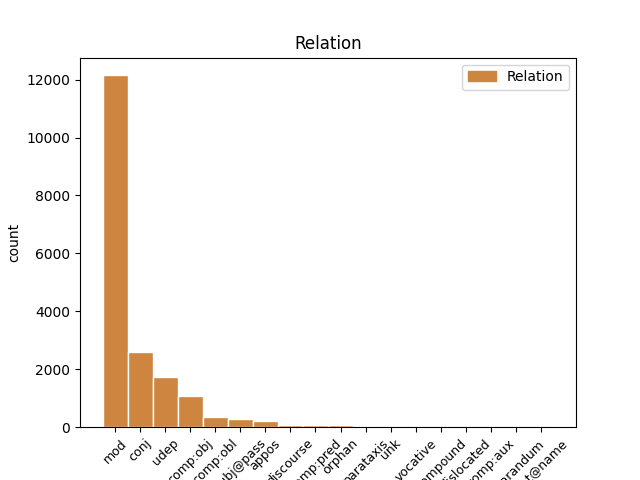
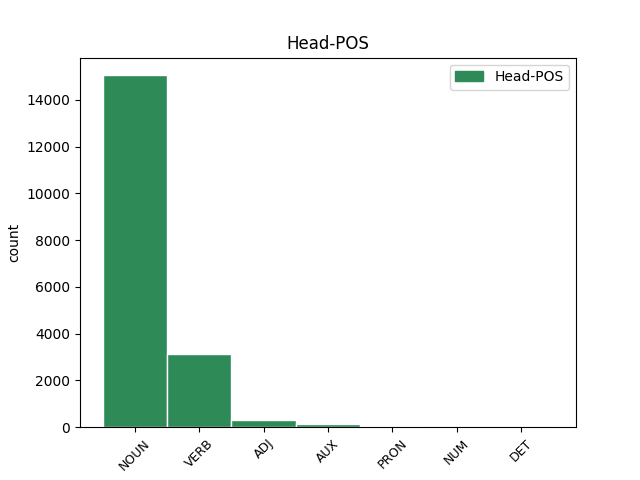
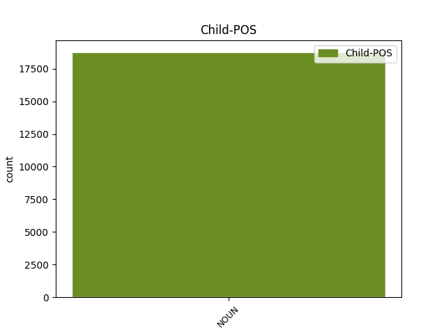

Distribution of features within this leaf



Agreement Rules sorted by frequency.
- When the dependent token is the modifer(mod) of the head token, and the head token is NOUN and the dependent token is NOUN.
1 No _ _ _ _ 0 _ _ _
2 arheoloģiskiem _ _ _ _ 0 _ _ _
3 izrakumiem _ _ _ _ 0 _ _ _
4 gan _ _ _ _ 0 _ _ _
5 redzams _ _ _ _ 0 _ _ _
6 , _ _ _ _ 0 _ _ _
7 ka _ _ _ _ 0 _ _ _
8 liela _ _ _ _ 0 _ _ _
9 dzimstība _ _ _ _ 0 _ _ _
10 neapstiprinās _ _ _ _ 0 _ _ _
11 ( _ _ _ _ 0 _ _ _
12 spriežot _ _ _ _ 0 _ _ _
13 pēc _ _ _ _ 0 _ _ _
14 māju _ _ _ _ 0 _ _ _
15 lieluma _ _ _ _ 0 _ _ _
16 ) _ _ _ _ 0 _ _ _
17 , _ _ _ _ 0 _ _ _
18 jo _ _ _ _ 0 _ _ _
19 liels _ _ _ _ 0 _ _ _
20 iedzīvotāju _ _ _ _ 0 _ _ _
21 skaita _ _ _ _ 0 _ _ _
22 pieaugums _ _ _ _ 0 _ _ _
23 līdzinātos _ _ _ _ 0 _ _ _
24 Āzijas _ _ _ _ 0 _ _ _
25 dzimstības dzimstība NOUN ncfsg4 Case=Gen|Gender=Fem|Number=Sing 26 mod _ LvtbNodeId=a-z99-p67s5w25
26 sprādzienam sprādziens NOUN ncmsd1 Case=Dat|Gender=Masc|Number=Sing 0 _ _ _
27 . _ _ _ _ 0 _ _ _
1 Svarīgākie _ _ _ _ 0 _ _ _
2 tikumi _ _ _ _ 0 _ _ _
3 , _ _ _ _ 0 _ _ _
4 ko _ _ _ _ 0 _ _ _
5 senās _ _ _ _ 0 _ _ _
6 Izraēlas _ _ _ _ 0 _ _ _
7 jauniešiem _ _ _ _ 0 _ _ _
8 vajadzēja _ _ _ _ 0 _ _ _
9 izkopt _ _ _ _ 0 _ _ _
10 , _ _ _ _ 0 _ _ _
11 bija _ _ _ _ 0 _ _ _
12 čaklums _ _ _ _ 0 _ _ _
13 , _ _ _ _ 0 _ _ _
14 godīgums _ _ _ _ 0 _ _ _
15 , _ _ _ _ 0 _ _ _
16 pazemība pazemība NOUN ncfsn4 Case=Nom|Gender=Fem|Number=Sing 0 _ _ _
17 , _ _ _ _ 0 _ _ _
18 kā _ _ _ _ 0 _ _ _
19 arī _ _ _ _ 0 _ _ _
20 dievbijība dievbijība NOUN ncfsn4 Case=Nom|Gender=Fem|Number=Sing 16 conj _ LvtbNodeId=a-z99-p160s1w20
21 ( _ _ _ _ 0 _ _ _
22 pēdējais _ _ _ _ 0 _ _ _
23 tika _ _ _ _ 0 _ _ _
24 uzskatīta _ _ _ _ 0 _ _ _
25 par _ _ _ _ 0 _ _ _
26 augstāko _ _ _ _ 0 _ _ _
27 vērtību _ _ _ _ 0 _ _ _
28 ) _ _ _ _ 0 _ _ _
29 . _ _ _ _ 0 _ _ _
1 VD _ _ _ _ 0 _ _ _
2 minēto _ _ _ _ 0 _ _ _
3 atsevišķu _ _ _ _ 0 _ _ _
4 sieviešu sieviete NOUN ncfpg5 Case=Gen|Gender=Fem|Number=Plur 5 udep _ LvtbNodeId=a-z99-p67s1w4
5 dzemdēto dzemdēt VERB vmnpdmpgpsypn Aspect=Perf|Case=Gen|Definite=Def|Degree=Pos|Gender=Masc|Number=Plur|Polarity=Pos|Tense=Past|VerbForm=Part|Voice=Pass 0 _ _ _
6 bērnu _ _ _ _ 0 _ _ _
7 skaitu _ _ _ _ 0 _ _ _
8 nedrīkst _ _ _ _ 0 _ _ _
9 pārvērtēt _ _ _ _ 0 _ _ _
10 . _ _ _ _ 0 _ _ _
1 Vērmahtam _ _ _ _ 0 _ _ _
2 ienākot _ _ _ _ 0 _ _ _
3 Latvijas _ _ _ _ 0 _ _ _
4 teritorijā _ _ _ _ 0 _ _ _
5 1941. _ _ _ _ 0 _ _ _
6 gada _ _ _ _ 0 _ _ _
7 vasarā _ _ _ _ 0 _ _ _
8 , _ _ _ _ 0 _ _ _
9 Vācijas _ _ _ _ 0 _ _ _
10 vadība _ _ _ _ 0 _ _ _
11 bija _ _ _ _ 0 _ _ _
12 iepriekš _ _ _ _ 0 _ _ _
13 sagatavojusi sagatavot VERB vmnpdfsnasnpn Aspect=Perf|Case=Nom|Definite=Ind|Degree=Pos|Gender=Fem|Number=Sing|Polarity=Pos|Tense=Past|VerbForm=Part|Voice=Act 0 _ _ _
14 darbības _ _ _ _ 0 _ _ _
15 plānu plāns NOUN ncmsa1 Case=Acc|Gender=Masc|Number=Sing 13 comp:obj _ LvtbNodeId=a-z90-p68s1w15
16 kompleksam _ _ _ _ 0 _ _ _
17 ekonomiski _ _ _ _ 0 _ _ _
18 politiskam _ _ _ _ 0 _ _ _
19 pasākumu _ _ _ _ 0 _ _ _
20 kopumam _ _ _ _ 0 _ _ _
21 . _ _ _ _ 0 _ _ _
1 Savukārt _ _ _ _ 0 _ _ _
2 , _ _ _ _ 0 _ _ _
3 pieprasot _ _ _ _ 0 _ _ _
4 failu _ _ _ _ 0 _ _ _
5 sistēmas _ _ _ _ 0 _ _ _
6 aģentam _ _ _ _ 0 _ _ _
7 konstatēt _ _ _ _ 0 _ _ _
8 notikumu _ _ _ _ 0 _ _ _
9 " _ _ _ _ 0 _ _ _
10 fails fails NOUN ncmsn1 Case=Nom|Gender=Masc|Number=Sing 11 subj@pass _ LvtbNodeId=a-z98-p30s4w10
11 dzēsts dzēst VERB vmnpdmsnpsnpn Aspect=Perf|Case=Nom|Definite=Ind|Degree=Pos|Gender=Masc|Number=Sing|Polarity=Pos|Tense=Past|VerbForm=Part|Voice=Pass 0 _ _ _
12 " _ _ _ _ 0 _ _ _
13 , _ _ _ _ 0 _ _ _
14 tiek _ _ _ _ 0 _ _ _
15 padota _ _ _ _ 0 _ _ _
16 šī _ _ _ _ 0 _ _ _
17 mainīgā _ _ _ _ 0 _ _ _
18 vērtība _ _ _ _ 0 _ _ _
19 . _ _ _ _ 0 _ _ _
1 Iespējams _ _ _ _ 0 _ _ _
2 , _ _ _ _ 0 _ _ _
3 ka _ _ _ _ 0 _ _ _
4 pazemība _ _ _ _ 0 _ _ _
5 senajā _ _ _ _ 0 _ _ _
6 Izraēlā _ _ _ _ 0 _ _ _
7 tika _ _ _ _ 0 _ _ _
8 pārņemta _ _ _ _ 0 _ _ _
9 kā _ _ _ _ 0 _ _ _
10 ierēdņu _ _ _ _ 0 _ _ _
11 tikums _ _ _ _ 0 _ _ _
12 no _ _ _ _ 0 _ _ _
13 apkārtējām _ _ _ _ 0 _ _ _
14 kultūrām _ _ _ _ 0 _ _ _
15 , _ _ _ _ 0 _ _ _
16 kas _ _ _ _ 0 _ _ _
17 tika _ _ _ _ 0 _ _ _
18 piemērota piemērot VERB vmnpdfsnpsnpn Aspect=Perf|Case=Nom|Definite=Ind|Degree=Pos|Gender=Fem|Number=Sing|Polarity=Pos|Tense=Past|VerbForm=Part|Voice=Pass 0 _ _ _
19 Jahves _ _ _ _ 0 _ _ _
20 reliģijai reliģija NOUN ncfsd4 Case=Dat|Gender=Fem|Number=Sing 18 comp:obl _ LvtbNodeId=a-z99-p160s2w20
21 ( _ _ _ _ 0 _ _ _
22 Jahve _ _ _ _ 0 _ _ _
23 ienīst _ _ _ _ 0 _ _ _
24 visus _ _ _ _ 0 _ _ _
25 augstprātīgos _ _ _ _ 0 _ _ _
26 un _ _ _ _ 0 _ _ _
27 lepnos _ _ _ _ 0 _ _ _
28 ) _ _ _ _ 0 _ _ _
29 . _ _ _ _ 0 _ _ _
1 Izceļams _ _ _ _ 0 _ _ _
2 rīkojuma _ _ _ _ 0 _ _ _
3 10. _ _ _ _ 0 _ _ _
4 punkts _ _ _ _ 0 _ _ _
5 , _ _ _ _ 0 _ _ _
6 kas _ _ _ _ 0 _ _ _
7 norāda _ _ _ _ 0 _ _ _
8 , _ _ _ _ 0 _ _ _
9 ka _ _ _ _ 0 _ _ _
10 jaunieši _ _ _ _ 0 _ _ _
11 jāapgādā _ _ _ _ 0 _ _ _
12 kā _ _ _ _ 0 _ _ _
13 savi _ _ _ _ 0 _ _ _
14 ģimenes _ _ _ _ 0 _ _ _
15 locekļi _ _ _ _ 0 _ _ _
16 un _ _ _ _ 0 _ _ _
17 jānodrošina _ _ _ _ 0 _ _ _
18 ar _ _ _ _ 0 _ _ _
19 pilnu _ _ _ _ 0 _ _ _
20 pansiju pansija NOUN ncfsa4 Case=Acc|Gender=Fem|Number=Sing 0 _ _ _
21 – _ _ _ _ 0 _ _ _
22 gultas _ _ _ _ 0 _ _ _
23 vietu vieta NOUN ncfsa4 Case=Acc|Gender=Fem|Number=Sing 20 appos _ LvtbNodeId=a-z90-p175s1w23|SpaceAfter=No
24 , _ _ _ _ 0 _ _ _
25 drēbēm _ _ _ _ 0 _ _ _
26 un _ _ _ _ 0 _ _ _
27 pārtiku _ _ _ _ 0 _ _ _
28 . _ _ _ _ 0 _ _ _
1 Jāņem _ _ _ _ 0 _ _ _
2 vērā _ _ _ _ 0 _ _ _
3 , _ _ _ _ 0 _ _ _
4 ka _ _ _ _ 0 _ _ _
5 šis _ _ _ _ 0 _ _ _
6 žanrs _ _ _ _ 0 _ _ _
7 ir _ _ _ _ 0 _ _ _
8 publikai publika NOUN ncfsd4 Case=Dat|Gender=Fem|Number=Sing 10 udep _ LvtbNodeId=a-z83-p189s2w8
9 labi _ _ _ _ 0 _ _ _
10 pazīstams pazīstams ADJ afmsnnp Case=Nom|Definite=Ind|Degree=Pos|Gender=Masc|Number=Sing 0 _ _ _
11 , _ _ _ _ 0 _ _ _
12 viegli _ _ _ _ 0 _ _ _
13 pieejams _ _ _ _ 0 _ _ _
14 , _ _ _ _ 0 _ _ _
15 jo _ _ _ _ 0 _ _ _
16 dominē _ _ _ _ 0 _ _ _
17 laikmetīgajā _ _ _ _ 0 _ _ _
18 kino _ _ _ _ 0 _ _ _
19 un _ _ _ _ 0 _ _ _
20 televīzijā _ _ _ _ 0 _ _ _
21 – _ _ _ _ 0 _ _ _
22 skatītājs _ _ _ _ 0 _ _ _
23 pārzina _ _ _ _ 0 _ _ _
24 melodrāmu _ _ _ _ 0 _ _ _
25 noteikumus _ _ _ _ 0 _ _ _
26 . _ _ _ _ 0 _ _ _
1 Diemžēl _ _ _ _ 0 _ _ _
2 , _ _ _ _ 0 _ _ _
3 netiek _ _ _ _ 0 _ _ _
4 dokumentēts _ _ _ _ 0 _ _ _
5 loga _ _ _ _ 0 _ _ _
6 veids _ _ _ _ 0 _ _ _
7 , _ _ _ _ 0 _ _ _
8 neatšifrējot _ _ _ _ 0 _ _ _
9 , _ _ _ _ 0 _ _ _
10 vai _ _ _ _ 0 _ _ _
11 tas _ _ _ _ 0 _ _ _
12 bijis būt AUX vcnpdmsnasnpn Aspect=Perf|Case=Nom|Definite=Ind|Degree=Pos|Gender=Masc|Number=Sing|Polarity=Pos|Tense=Past|VerbForm=Part|Voice=Act 0 _ _ _
13 vitrāžas _ _ _ _ 0 _ _ _
14 logs logs NOUN ncmsn1 Case=Nom|Gender=Masc|Number=Sing 12 comp:pred _ LvtbNodeId=a-z48-p28s11w14|SpaceAfter=No
15 . _ _ _ _ 0 _ _ _
1 Visizteiktākais _ _ _ _ 0 _ _ _
2 tas _ _ _ _ 0 _ _ _
3 ir _ _ _ _ 0 _ _ _
4 bijis būt AUX vcnpdmsnasnpn Aspect=Perf|Case=Nom|Definite=Ind|Degree=Pos|Gender=Masc|Number=Sing|Polarity=Pos|Tense=Past|VerbForm=Part|Voice=Act 0 _ _ _
5 Čehijas _ _ _ _ 0 _ _ _
6 Republikā republika NOUN ncfsl4 Case=Loc|Gender=Fem|Number=Sing 4 udep _ LvtbNodeId=a-z46-p7s10w6|SpaceAfter=No
7 , _ _ _ _ 0 _ _ _
8 kur _ _ _ _ 0 _ _ _
9 minētā _ _ _ _ 0 _ _ _
10 attiecība _ _ _ _ 0 _ _ _
11 ir _ _ _ _ 0 _ _ _
12 samazinājusies _ _ _ _ 0 _ _ _
13 no _ _ _ _ 0 _ _ _
14 23,4 _ _ _ _ 0 _ _ _
15 uz _ _ _ _ 0 _ _ _
16 17,5 _ _ _ _ 0 _ _ _
17 . _ _ _ _ 0 _ _ _
1 Salīdzinājumam salīdzinājums NOUN ncmsd1 Case=Dat|Gender=Masc|Number=Sing 8 orphan _ LvtbNodeId=a-z31-p109s4w1
2 A. _ _ _ _ 0 _ _ _
3 Upīša _ _ _ _ 0 _ _ _
4 romāna _ _ _ _ 0 _ _ _
5 „ _ _ _ _ 0 _ _ _
6 Sieviete _ _ _ _ 0 _ _ _
7 ” _ _ _ _ 0 _ _ _
8 fināls fināls NOUN ncmsn1 Case=Nom|Gender=Masc|Number=Sing 0 _ _ _
9 , _ _ _ _ 0 _ _ _
10 kur _ _ _ _ 0 _ _ _
11 Elza _ _ _ _ 0 _ _ _
12 pēdējā _ _ _ _ 0 _ _ _
13 brīdī _ _ _ _ 0 _ _ _
14 mēģina _ _ _ _ 0 _ _ _
15 noturēties _ _ _ _ 0 _ _ _
16 , _ _ _ _ 0 _ _ _
17 pēkšņi _ _ _ _ 0 _ _ _
18 sajūtot _ _ _ _ 0 _ _ _
19 dzīvības _ _ _ _ 0 _ _ _
20 instinktu _ _ _ _ 0 _ _ _
21 , _ _ _ _ 0 _ _ _
22 tomēr _ _ _ _ 0 _ _ _
23 nesekmīgi _ _ _ _ 0 _ _ _
24 . _ _ _ _ 0 _ _ _
1 Kultūras _ _ _ _ 0 _ _ _
2 vardarbība _ _ _ _ 0 _ _ _
3 ir _ _ _ _ 0 _ _ _
4 pārstāvēta _ _ _ _ 0 _ _ _
5 tajos _ _ _ _ 0 _ _ _
6 kultūras _ _ _ _ 0 _ _ _
7 aspektos _ _ _ _ 0 _ _ _
8 ( _ _ _ _ 0 _ _ _
9 mūsu _ _ _ _ 0 _ _ _
10 eksistences _ _ _ _ 0 _ _ _
11 simboliskajā _ _ _ _ 0 _ _ _
12 sfērā sfēra NOUN ncfsl4 Case=Loc|Gender=Fem|Number=Sing 14 udep _ LvtbNodeId=a-z99-p16s4w12|SpaceAfter=No
13 : _ _ _ _ 0 _ _ _
14 reliģija reliģija NOUN ncfsn4 Case=Nom|Gender=Fem|Number=Sing 0 _ _ _
15 , _ _ _ _ 0 _ _ _
16 ideoloģija _ _ _ _ 0 _ _ _
17 , _ _ _ _ 0 _ _ _
18 valoda _ _ _ _ 0 _ _ _
19 , _ _ _ _ 0 _ _ _
20 māksla _ _ _ _ 0 _ _ _
21 , _ _ _ _ 0 _ _ _
22 empīriskā _ _ _ _ 0 _ _ _
23 zinātne _ _ _ _ 0 _ _ _
24 , _ _ _ _ 0 _ _ _
25 formālā _ _ _ _ 0 _ _ _
26 zinātne _ _ _ _ 0 _ _ _
27 ) _ _ _ _ 0 _ _ _
28 , _ _ _ _ 0 _ _ _
29 kas _ _ _ _ 0 _ _ _
30 tiek _ _ _ _ 0 _ _ _
31 lietota _ _ _ _ 0 _ _ _
32 , _ _ _ _ 0 _ _ _
33 lai _ _ _ _ 0 _ _ _
34 attaisnotu _ _ _ _ 0 _ _ _
35 vai _ _ _ _ 0 _ _ _
36 leģitimētu _ _ _ _ 0 _ _ _
37 tiešo _ _ _ _ 0 _ _ _
38 vai _ _ _ _ 0 _ _ _
39 strukturālo _ _ _ _ 0 _ _ _
40 vardarbību _ _ _ _ 0 _ _ _
41 . _ _ _ _ 0 _ _ _
1 Lai _ _ _ _ 0 _ _ _
2 varētu _ _ _ _ 0 _ _ _
3 izsekot _ _ _ _ 0 _ _ _
4 verificējamā _ _ _ _ 0 _ _ _
5 procesa _ _ _ _ 0 _ _ _
6 instances _ _ _ _ 0 _ _ _
7 izpildei _ _ _ _ 0 _ _ _
8 , _ _ _ _ 0 _ _ _
9 katrs _ _ _ _ 0 _ _ _
10 no _ _ _ _ 0 _ _ _
11 notikumiem _ _ _ _ 0 _ _ _
12 satur _ _ _ _ 0 _ _ _
13 zināmus _ _ _ _ 0 _ _ _
14 to _ _ _ _ 0 _ _ _
15 identificējošus _ _ _ _ 0 _ _ _
16 parametrus _ _ _ _ 0 _ _ _
17 , _ _ _ _ 0 _ _ _
18 piemēram piemērs NOUN ncmsd1 Case=Dat|Gender=Masc|Number=Sing 21 discourse _ LvtbNodeId=a-z98-p27s3w18|SpaceAfter=No
19 , _ _ _ _ 0 _ _ _
20 faila _ _ _ _ 0 _ _ _
21 nosaukumu nosaukums NOUN ncmsa1 Case=Acc|Gender=Masc|Number=Sing 0 _ _ _
22 , _ _ _ _ 0 _ _ _
23 kura _ _ _ _ 0 _ _ _
24 modificēšana _ _ _ _ 0 _ _ _
25 ir _ _ _ _ 0 _ _ _
26 jāpamana _ _ _ _ 0 _ _ _
27 , _ _ _ _ 0 _ _ _
28 vai _ _ _ _ 0 _ _ _
29 tabulas _ _ _ _ 0 _ _ _
30 ieraksta _ _ _ _ 0 _ _ _
31 identifikatoru _ _ _ _ 0 _ _ _
32 ieraksta _ _ _ _ 0 _ _ _
33 dzēšanas _ _ _ _ 0 _ _ _
34 gadījumā _ _ _ _ 0 _ _ _
35 . _ _ _ _ 0 _ _ _
1 Iespējams _ _ _ _ 0 _ _ _
2 , _ _ _ _ 0 _ _ _
3 ka _ _ _ _ 0 _ _ _
4 pazemība _ _ _ _ 0 _ _ _
5 senajā _ _ _ _ 0 _ _ _
6 Izraēlā _ _ _ _ 0 _ _ _
7 tika _ _ _ _ 0 _ _ _
8 pārņemta pārņemt VERB vmnpdfsnpsnpn Aspect=Perf|Case=Nom|Definite=Ind|Degree=Pos|Gender=Fem|Number=Sing|Polarity=Pos|Tense=Past|VerbForm=Part|Voice=Pass 0 _ _ _
9 kā _ _ _ _ 0 _ _ _
10 ierēdņu _ _ _ _ 0 _ _ _
11 tikums tikums NOUN ncmsn1 Case=Nom|Gender=Masc|Number=Sing 8 mod _ LvtbNodeId=a-z99-p160s2w11
12 no _ _ _ _ 0 _ _ _
13 apkārtējām _ _ _ _ 0 _ _ _
14 kultūrām _ _ _ _ 0 _ _ _
15 , _ _ _ _ 0 _ _ _
16 kas _ _ _ _ 0 _ _ _
17 tika _ _ _ _ 0 _ _ _
18 piemērota _ _ _ _ 0 _ _ _
19 Jahves _ _ _ _ 0 _ _ _
20 reliģijai _ _ _ _ 0 _ _ _
21 ( _ _ _ _ 0 _ _ _
22 Jahve _ _ _ _ 0 _ _ _
23 ienīst _ _ _ _ 0 _ _ _
24 visus _ _ _ _ 0 _ _ _
25 augstprātīgos _ _ _ _ 0 _ _ _
26 un _ _ _ _ 0 _ _ _
27 lepnos _ _ _ _ 0 _ _ _
28 ) _ _ _ _ 0 _ _ _
29 . _ _ _ _ 0 _ _ _
1 Nesen _ _ _ _ 0 _ _ _
2 veiktajā _ _ _ _ 0 _ _ _
3 pētījumā pētījums NOUN ncmsl1 Case=Loc|Gender=Masc|Number=Sing 0 _ _ _
4 par _ _ _ _ 0 _ _ _
5 reģistrētās _ _ _ _ 0 _ _ _
6 un _ _ _ _ 0 _ _ _
7 nereģistrētās _ _ _ _ 0 _ _ _
8 kopdzīves _ _ _ _ 0 _ _ _
9 faktoru _ _ _ _ 0 _ _ _
10 salīdzinošo _ _ _ _ 0 _ _ _
11 analīzi _ _ _ _ 0 _ _ _
12 [ _ _ _ _ 0 _ _ _
13 LU _ _ _ _ 0 _ _ _
14 Publiskās _ _ _ _ 0 _ _ _
15 antropoloģijas _ _ _ _ 0 _ _ _
16 centrs centrs NOUN ncmsn1 Case=Nom|Gender=Masc|Number=Sing 3 parataxis _ LvtbNodeId=a-z87-p129s2w16|SpaceAfter=No
17 , _ _ _ _ 0 _ _ _
18 2015 _ _ _ _ 0 _ _ _
19 ] _ _ _ _ 0 _ _ _
20 respondenti _ _ _ _ 0 _ _ _
21 lielākoties _ _ _ _ 0 _ _ _
22 uzskatījuši _ _ _ _ 0 _ _ _
23 , _ _ _ _ 0 _ _ _
24 ka _ _ _ _ 0 _ _ _
25 kopdzīve _ _ _ _ 0 _ _ _
26 un _ _ _ _ 0 _ _ _
27 attiecības _ _ _ _ 0 _ _ _
28 jebkurā _ _ _ _ 0 _ _ _
29 brīdī _ _ _ _ 0 _ _ _
30 var _ _ _ _ 0 _ _ _
31 pāraugt _ _ _ _ 0 _ _ _
32 laulībā _ _ _ _ 0 _ _ _
33 . _ _ _ _ 0 _ _ _
1 Piemēram _ _ _ _ 0 _ _ _
2 , _ _ _ _ 0 _ _ _
3 notikums _ _ _ _ 0 _ _ _
4 " _ _ _ _ 0 _ _ _
5 jauns _ _ _ _ 0 _ _ _
6 fails _ _ _ _ 0 _ _ _
7 " _ _ _ _ 0 _ _ _
8 atgriež _ _ _ _ 0 _ _ _
9 izveidotā _ _ _ _ 0 _ _ _
10 faila _ _ _ _ 0 _ _ _
11 nosaukumu _ _ _ _ 0 _ _ _
12 , _ _ _ _ 0 _ _ _
13 kas _ _ _ _ 0 _ _ _
14 tiek _ _ _ _ 0 _ _ _
15 saglabāts _ _ _ _ 0 _ _ _
16 procesa _ _ _ _ 0 _ _ _
17 verificēšanas _ _ _ _ 0 _ _ _
18 apraksta apraksts NOUN ncmsg1 Case=Gen|Gender=Masc|Number=Sing 19 mod _ LvtbNodeId=a-z98-p30s3w18
19 mainīgajā mainīgs ADJ affslyp Case=Loc|Definite=Def|Degree=Pos|Gender=Fem|Number=Sing 0 _ _ _
20 . _ _ _ _ 0 _ _ _
1 Saistība _ _ _ _ 0 _ _ _
2 ar _ _ _ _ 0 _ _ _
3 ekonomisko _ _ _ _ 0 _ _ _
4 situāciju _ _ _ _ 0 _ _ _
5 ir _ _ _ _ 0 _ _ _
6 nenoliedzama _ _ _ _ 0 _ _ _
7 , _ _ _ _ 0 _ _ _
8 un _ _ _ _ 0 _ _ _
9 tas _ _ _ _ 0 _ _ _
10 varētu _ _ _ _ 0 _ _ _
11 būt _ _ _ _ 0 _ _ _
12 bijis _ _ _ _ 0 _ _ _
13 par _ _ _ _ 0 _ _ _
14 pamatu pamats NOUN ncmsa1 Case=Acc|Gender=Masc|Number=Sing 0 _ _ _
15 Horn _ _ _ _ 0 _ _ _
16 P. _ _ _ _ 0 _ _ _
17 J. _ _ _ _ 0 _ _ _
18 idejai ideja NOUN ncfsd4 Case=Dat|Gender=Fem|Number=Sing 14 comp:obl _ LvtbNodeId=a-z46-p9s3w18
19 prognozēt _ _ _ _ 0 _ _ _
20 skolotāju _ _ _ _ 0 _ _ _
21 skaitu _ _ _ _ 0 _ _ _
22 , _ _ _ _ 0 _ _ _
23 izmantojot _ _ _ _ 0 _ _ _
24 ekonometrisko _ _ _ _ 0 _ _ _
25 modeli _ _ _ _ 0 _ _ _
26 un _ _ _ _ 0 _ _ _
27 aplūkot _ _ _ _ 0 _ _ _
28 to _ _ _ _ 0 _ _ _
29 kā _ _ _ _ 0 _ _ _
30 funkciju _ _ _ _ 0 _ _ _
31 no _ _ _ _ 0 _ _ _
32 iekšzemes _ _ _ _ 0 _ _ _
33 kopprodukta _ _ _ _ 0 _ _ _
34 vienam _ _ _ _ 0 _ _ _
35 iedzīvotājam _ _ _ _ 0 _ _ _
36 un _ _ _ _ 0 _ _ _
37 skolēnu _ _ _ _ 0 _ _ _
38 skaita _ _ _ _ 0 _ _ _
39 ( _ _ _ _ 0 _ _ _
40 Horn _ _ _ _ 0 _ _ _
41 , _ _ _ _ 0 _ _ _
42 1988 _ _ _ _ 0 _ _ _
43 ) _ _ _ _ 0 _ _ _
44 . _ _ _ _ 0 _ _ _
1 Tos _ _ _ _ 0 _ _ _
2 var _ _ _ _ 0 _ _ _
3 iedalīt _ _ _ _ 0 _ _ _
4 pēc _ _ _ _ 0 _ _ _
5 īstermiņa _ _ _ _ 0 _ _ _
6 un _ _ _ _ 0 _ _ _
7 ilgtermiņa _ _ _ _ 0 _ _ _
8 mērķiem _ _ _ _ 0 _ _ _
9 , _ _ _ _ 0 _ _ _
10 kurus _ _ _ _ 0 _ _ _
11 Vācija _ _ _ _ 0 _ _ _
12 saistīja _ _ _ _ 0 _ _ _
13 ar _ _ _ _ 0 _ _ _
14 okupētajām _ _ _ _ 0 _ _ _
15 Austrumu _ _ _ _ 0 _ _ _
16 teritorijām _ _ _ _ 0 _ _ _
17 – _ _ _ _ 0 _ _ _
18 par _ _ _ _ 0 _ _ _
19 īstermiņa _ _ _ _ 0 _ _ _
20 mērķiem _ _ _ _ 0 _ _ _
21 atbildīgs _ _ _ _ 0 _ _ _
22 bija _ _ _ _ 0 _ _ _
23 vērmahts _ _ _ _ 0 _ _ _
24 un _ _ _ _ 0 _ _ _
25 H. _ _ _ _ 0 _ _ _
26 Gērings _ _ _ _ 0 _ _ _
27 , _ _ _ _ 0 _ _ _
28 kuru _ _ _ _ 0 _ _ _
29 Hitlers _ _ _ _ 0 _ _ _
30 iecēla _ _ _ _ 0 _ _ _
31 par _ _ _ _ 0 _ _ _
32 atbildīgo atbildīgs ADJ afmsayp Case=Acc|Definite=Def|Degree=Pos|Gender=Masc|Number=Sing 0 _ _ _
33 ekonomisko _ _ _ _ 0 _ _ _
34 jautājumu _ _ _ _ 0 _ _ _
35 risināšanā risināšana NOUN ncfsl4 Case=Loc|Gender=Fem|Number=Sing 32 unk _ LvtbNodeId=a-z90-p68s2w35|SpaceAfter=No
36 , _ _ _ _ 0 _ _ _
37 bet _ _ _ _ 0 _ _ _
38 par _ _ _ _ 0 _ _ _
39 ilgtermiņa _ _ _ _ 0 _ _ _
40 mērķiem _ _ _ _ 0 _ _ _
41 Okupēto _ _ _ _ 0 _ _ _
42 Austrumu _ _ _ _ 0 _ _ _
43 Apgabalu _ _ _ _ 0 _ _ _
44 ministrija _ _ _ _ 0 _ _ _
45 un _ _ _ _ 0 _ _ _
46 A. _ _ _ _ 0 _ _ _
47 Rozenbergs _ _ _ _ 0 _ _ _
48 . _ _ _ _ 0 _ _ _
1 Latvijas _ _ _ _ 0 _ _ _
2 Universitātes _ _ _ _ 0 _ _ _
3 Juridiskajā _ _ _ _ 0 _ _ _
4 fakultātē _ _ _ _ 0 _ _ _
5 ieguvis iegūt VERB vmnpdmsnasnpn Aspect=Perf|Case=Nom|Definite=Ind|Degree=Pos|Gender=Masc|Number=Sing|Polarity=Pos|Tense=Past|VerbForm=Part|Voice=Act 0 _ _ _
6 sociālo _ _ _ _ 0 _ _ _
7 zinātņu _ _ _ _ 0 _ _ _
8 maģistra _ _ _ _ 0 _ _ _
9 grādu _ _ _ _ 0 _ _ _
10 tiesību _ _ _ _ 0 _ _ _
11 zinātnē _ _ _ _ 0 _ _ _
12 , _ _ _ _ 0 _ _ _
13 bet _ _ _ _ 0 _ _ _
14 biznesa _ _ _ _ 0 _ _ _
15 augstskolā _ _ _ _ 0 _ _ _
16 " _ _ _ _ 0 _ _ _
17 Turība _ _ _ _ 0 _ _ _
18 " _ _ _ _ 0 _ _ _
19 - _ _ _ _ 0 _ _ _
20 jurista _ _ _ _ 0 _ _ _
21 kvalifikāciju kvalifikācija NOUN ncfsa4 Case=Acc|Gender=Fem|Number=Sing 5 conj _ LvtbNodeId=a-p3771-p4s2w21|SpaceAfter=No
22 . _ _ _ _ 0 _ _ _
1 Kā _ _ _ _ 0 _ _ _
2 atzīst _ _ _ _ 0 _ _ _
3 vairāki _ _ _ _ 0 _ _ _
4 VD _ _ _ _ 0 _ _ _
5 teologi _ _ _ _ 0 _ _ _
6 , _ _ _ _ 0 _ _ _
7 VD _ _ _ _ 0 _ _ _
8 tekstiem _ _ _ _ 0 _ _ _
9 piemērotāka _ _ _ _ 0 _ _ _
10 ir _ _ _ _ 0 _ _ _
11 skandināvu _ _ _ _ 0 _ _ _
12 pētnieka _ _ _ _ 0 _ _ _
13 Johana _ _ _ _ 0 _ _ _
14 Galtunga _ _ _ _ 0 _ _ _
15 ( _ _ _ _ 0 _ _ _
16 Galtung _ _ _ _ 0 _ _ _
17 ) _ _ _ _ 0 _ _ _
18 piedāvātā _ _ _ _ 0 _ _ _
19 teorija _ _ _ _ 0 _ _ _
20 par _ _ _ _ 0 _ _ _
21 vardarbību _ _ _ _ 0 _ _ _
22 , _ _ _ _ 0 _ _ _
23 kurā _ _ _ _ 0 _ _ _
24 izšķir _ _ _ _ 0 _ _ _
25 tiešu _ _ _ _ 0 _ _ _
26 , _ _ _ _ 0 _ _ _
27 strukturālu strukturāls ADJ affsanp Case=Acc|Definite=Ind|Degree=Pos|Gender=Fem|Number=Sing 0 _ _ _
28 un _ _ _ _ 0 _ _ _
29 kultūras kultūra NOUN ncfsg4 Case=Gen|Gender=Fem|Number=Sing 27 conj _ LvtbNodeId=a-z99-p16s1w29
30 vardarbību _ _ _ _ 0 _ _ _
31 . _ _ _ _ 0 _ _ _
1 - _ _ _ _ 0 _ _ _
2 Es _ _ _ _ 0 _ _ _
3 neatbildēju _ _ _ _ 0 _ _ _
4 tāpēc _ _ _ _ 0 _ _ _
5 , _ _ _ _ 0 _ _ _
6 ka _ _ _ _ 0 _ _ _
7 tas _ _ _ _ 0 _ _ _
8 policists _ _ _ _ 0 _ _ _
9 , _ _ _ _ 0 _ _ _
10 kurš _ _ _ _ 0 _ _ _
11 mani _ _ _ _ 0 _ _ _
12 izjautāja _ _ _ _ 0 _ _ _
13 , _ _ _ _ 0 _ _ _
14 uzvedās _ _ _ _ 0 _ _ _
15 tā _ _ _ _ 0 _ _ _
16 , _ _ _ _ 0 _ _ _
17 it _ _ _ _ 0 _ _ _
18 kā _ _ _ _ 0 _ _ _
19 es _ _ _ _ 0 _ _ _
20 būtu _ _ _ _ 0 _ _ _
21 sabraukusi _ _ _ _ 0 _ _ _
22 viņu viņš PRON pp3msan Case=Acc|Gender=Masc|Number=Sing|Person=3|PronType=Prs 0 _ _ _
23 , _ _ _ _ 0 _ _ _
24 nevis _ _ _ _ 0 _ _ _
25 to _ _ _ _ 0 _ _ _
26 vīrieti vīrietis NOUN ncmsa2 Case=Acc|Gender=Masc|Number=Sing 22 conj _ LvtbNodeId=a-p8230-p2s12w26|SpaceAfter=No
27 . _ _ _ _ 0 _ _ _
1 Tādēļ _ _ _ _ 0 _ _ _
2 nolēmām _ _ _ _ 0 _ _ _
3 uzdot _ _ _ _ 0 _ _ _
4 jautājumu _ _ _ _ 0 _ _ _
5 arī _ _ _ _ 0 _ _ _
6 jums jūs PRON pp20pdn Case=Dat|Number=Plur|Person=2|PronType=Prs 0 _ _ _
7 , _ _ _ _ 0 _ _ _
8 lasītāji lasītājs NOUN ncmpn1 Case=Nom|Gender=Masc|Number=Plur 6 appos _ LvtbNodeId=a-p8928-p3s2w8
9 – _ _ _ _ 0 _ _ _
10 vai _ _ _ _ 0 _ _ _
11 Kristīne _ _ _ _ 0 _ _ _
12 melo _ _ _ _ 0 _ _ _
13 ? _ _ _ _ 0 _ _ _
1 Šāda _ _ _ _ 0 _ _ _
2 pieeja _ _ _ _ 0 _ _ _
3 nesakņojas _ _ _ _ 0 _ _ _
4 tikai _ _ _ _ 0 _ _ _
5 morālas _ _ _ _ 0 _ _ _
6 dabas _ _ _ _ 0 _ _ _
7 apsvērumos _ _ _ _ 0 _ _ _
8 , _ _ _ _ 0 _ _ _
9 bet _ _ _ _ 0 _ _ _
10 ietver _ _ _ _ 0 _ _ _
11 arī _ _ _ _ 0 _ _ _
12 efektivitātes _ _ _ _ 0 _ _ _
13 jautājumus _ _ _ _ 0 _ _ _
14 , _ _ _ _ 0 _ _ _
15 jo _ _ _ _ 0 _ _ _
16 tieši _ _ _ _ 0 _ _ _
17 šīs _ _ _ _ 0 _ _ _
18 sabiedrības _ _ _ _ 0 _ _ _
19 grupas _ _ _ _ 0 _ _ _
20 zinās _ _ _ _ 0 _ _ _
21 vislabāk _ _ _ _ 0 _ _ _
22 , _ _ _ _ 0 _ _ _
23 kas _ _ _ _ 0 _ _ _
24 tām _ _ _ _ 0 _ _ _
25 ir _ _ _ _ 0 _ _ _
26 nepieciešams nepieciešams ADJ afmsnnp Case=Nom|Definite=Ind|Degree=Pos|Gender=Masc|Number=Sing 0 _ _ _
27 nedrošības _ _ _ _ 0 _ _ _
28 mazināšanai mazināšana NOUN ncfsd4 Case=Dat|Gender=Fem|Number=Sing 26 comp:obl _ LvtbNodeId=a-z107-p138s2w28|SpaceAfter=No
29 . _ _ _ _ 0 _ _ _
1 Jaunais _ _ _ _ 0 _ _ _
2 Rīgas _ _ _ _ 0 _ _ _
3 teātris teātris NOUN ncmsn2 Case=Nom|Gender=Masc|Number=Sing 6 subj@pass _ LvtbNodeId=a-z83-p16s1w3
4 ārzemēs _ _ _ _ 0 _ _ _
5 nereti _ _ _ _ 0 _ _ _
6 ticis tikt AUX vtnpdmsnasnpn Aspect=Perf|Case=Nom|Definite=Ind|Degree=Pos|Gender=Masc|Number=Sing|Polarity=Pos|Tense=Past|VerbForm=Part|Voice=Act 0 _ _ _
7 uztverts _ _ _ _ 0 _ _ _
8 kā _ _ _ _ 0 _ _ _
9 viena _ _ _ _ 0 _ _ _
10 režisora _ _ _ _ 0 _ _ _
11 autorteātris _ _ _ _ 0 _ _ _
12 , _ _ _ _ 0 _ _ _
13 kļūdaini _ _ _ _ 0 _ _ _
14 uzsverot _ _ _ _ 0 _ _ _
15 , _ _ _ _ 0 _ _ _
16 ka _ _ _ _ 0 _ _ _
17 to _ _ _ _ 0 _ _ _
18 1997. _ _ _ _ 0 _ _ _
19 gadā _ _ _ _ 0 _ _ _
20 dibinājis _ _ _ _ 0 _ _ _
21 Alvis _ _ _ _ 0 _ _ _
22 Hermanis _ _ _ _ 0 _ _ _
23 . _ _ _ _ 0 _ _ _
1 Lai _ _ _ _ 0 _ _ _
2 arī _ _ _ _ 0 _ _ _
3 kāda kāds PRON pi0msgn Case=Gen|Gender=Masc|Number=Sing|PronType=Ind 0 _ _ _
4 būtu _ _ _ _ 0 _ _ _
5 profesija _ _ _ _ 0 _ _ _
6 – _ _ _ _ 0 _ _ _
7 skolotāja skolotāja NOUN ncfsn4 Case=Nom|Gender=Fem|Number=Sing 3 mod _ LvtbNodeId=a-p9585-p5s2w7|SpaceAfter=No
8 , _ _ _ _ 0 _ _ _
9 ekonomiste _ _ _ _ 0 _ _ _
10 , _ _ _ _ 0 _ _ _
11 ķīmiķe _ _ _ _ 0 _ _ _
12 , _ _ _ _ 0 _ _ _
13 sporta _ _ _ _ 0 _ _ _
14 trenere _ _ _ _ 0 _ _ _
15 , _ _ _ _ 0 _ _ _
16 medicīnas _ _ _ _ 0 _ _ _
17 māsa _ _ _ _ 0 _ _ _
18 , _ _ _ _ 0 _ _ _
19 pastniece _ _ _ _ 0 _ _ _
20 , _ _ _ _ 0 _ _ _
21 elektroiekārtu _ _ _ _ 0 _ _ _
22 montiere _ _ _ _ 0 _ _ _
23 , _ _ _ _ 0 _ _ _
24 mājsaimniece _ _ _ _ 0 _ _ _
25 , _ _ _ _ 0 _ _ _
26 lietvede _ _ _ _ 0 _ _ _
27 , _ _ _ _ 0 _ _ _
28 skolniece _ _ _ _ 0 _ _ _
29 vai _ _ _ _ 0 _ _ _
30 pensionāre _ _ _ _ 0 _ _ _
31 – _ _ _ _ 0 _ _ _
32 ar _ _ _ _ 0 _ _ _
33 izšūšanu _ _ _ _ 0 _ _ _
34 nodarboties _ _ _ _ 0 _ _ _
35 un _ _ _ _ 0 _ _ _
36 radīt _ _ _ _ 0 _ _ _
37 mākslas _ _ _ _ 0 _ _ _
38 darbus _ _ _ _ 0 _ _ _
39 var _ _ _ _ 0 _ _ _
40 katrs _ _ _ _ 0 _ _ _
41 , _ _ _ _ 0 _ _ _
42 to _ _ _ _ 0 _ _ _
43 apstiprina _ _ _ _ 0 _ _ _
44 arī _ _ _ _ 0 _ _ _
45 šī _ _ _ _ 0 _ _ _
46 izstāde _ _ _ _ 0 _ _ _
47 . _ _ _ _ 0 _ _ _
1 Piemēram piemērs NOUN ncmsd1 Case=Dat|Gender=Masc|Number=Sing 10 discourse _ LvtbNodeId=a-z106-p177s4w1|SpaceAfter=No
2 , _ _ _ _ 0 _ _ _
3 Pilsonības _ _ _ _ 0 _ _ _
4 un _ _ _ _ 0 _ _ _
5 imigrācijas _ _ _ _ 0 _ _ _
6 departamenta _ _ _ _ 0 _ _ _
7 preses _ _ _ _ 0 _ _ _
8 sekretārs _ _ _ _ 0 _ _ _
9 nesen _ _ _ _ 0 _ _ _
10 apgalvojis apgalvot VERB vmnpdmsnasnpn Aspect=Perf|Case=Nom|Definite=Ind|Degree=Pos|Gender=Masc|Number=Sing|Polarity=Pos|Tense=Past|VerbForm=Part|Voice=Act 0 _ _ _
11 , _ _ _ _ 0 _ _ _
12 ka _ _ _ _ 0 _ _ _
13 „ _ _ _ _ 0 _ _ _
14 PID _ _ _ _ 0 _ _ _
15 visu _ _ _ _ 0 _ _ _
16 laiku _ _ _ _ 0 _ _ _
17 atgādina _ _ _ _ 0 _ _ _
18 un _ _ _ _ 0 _ _ _
19 uzsver _ _ _ _ 0 _ _ _
20 , _ _ _ _ 0 _ _ _
21 ka _ _ _ _ 0 _ _ _
22 visiem _ _ _ _ 0 _ _ _
23 šiem _ _ _ _ 0 _ _ _
24 700 000 _ _ _ _ 0 _ _ _
25 iedzīvotāju _ _ _ _ 0 _ _ _
26 agri _ _ _ _ 0 _ _ _
27 vai _ _ _ _ 0 _ _ _
28 vēlu _ _ _ _ 0 _ _ _
29 būs _ _ _ _ 0 _ _ _
30 jābrauc _ _ _ _ 0 _ _ _
31 projām _ _ _ _ 0 _ _ _
32 no _ _ _ _ 0 _ _ _
33 Latvijas _ _ _ _ 0 _ _ _
34 ” _ _ _ _ 0 _ _ _
35 . _ _ _ _ 0 _ _ _
1 No _ _ _ _ 0 _ _ _
2 otras _ _ _ _ 0 _ _ _
3 puses _ _ _ _ 0 _ _ _
4 , _ _ _ _ 0 _ _ _
5 ņemot _ _ _ _ 0 _ _ _
6 vērā _ _ _ _ 0 _ _ _
7 izglītības _ _ _ _ 0 _ _ _
8 darbinieku _ _ _ _ 0 _ _ _
9 un _ _ _ _ 0 _ _ _
10 sabiedriskās _ _ _ _ 0 _ _ _
11 domas _ _ _ _ 0 _ _ _
12 kopumā _ _ _ _ 0 _ _ _
13 spiedienu _ _ _ _ 0 _ _ _
14 uz _ _ _ _ 0 _ _ _
15 izglītības _ _ _ _ 0 _ _ _
16 politikas _ _ _ _ 0 _ _ _
17 veidotājiem _ _ _ _ 0 _ _ _
18 , _ _ _ _ 0 _ _ _
19 nav _ _ _ _ 0 _ _ _
20 pamats _ _ _ _ 0 _ _ _
21 domāt _ _ _ _ 0 _ _ _
22 , _ _ _ _ 0 _ _ _
23 ka _ _ _ _ 0 _ _ _
24 skolēnu skolēns NOUN ncmpg1 Case=Gen|Gender=Masc|Number=Plur 0 _ _ _
25 pedagoģisko _ _ _ _ 0 _ _ _
26 darbinieku darbinieks NOUN ncmpg1 Case=Gen|Gender=Masc|Number=Plur 24 compound _ LvtbNodeId=a-z46-p21s6w26
27 attiecība _ _ _ _ 0 _ _ _
28 Latvijā _ _ _ _ 0 _ _ _
29 turpmākajos _ _ _ _ 0 _ _ _
30 gados _ _ _ _ 0 _ _ _
31 varētu _ _ _ _ 0 _ _ _
32 strauji _ _ _ _ 0 _ _ _
33 augt _ _ _ _ 0 _ _ _
34 . _ _ _ _ 0 _ _ _
1 Lembergs _ _ _ _ 0 _ _ _
2 atriebjas _ _ _ _ 0 _ _ _
3 Artim _ _ _ _ 0 _ _ _
4 Kamparam _ _ _ _ 0 _ _ _
5 par _ _ _ _ 0 _ _ _
6 raidījumu raidījums NOUN ncmsa1 Case=Acc|Gender=Masc|Number=Sing 7 mod _ LvtbNodeId=a-p5293-p1s1w6
7 Viens viens NUM mcsmsn Case=Nom|Gender=Masc|Number=Sing|NumType=Card 0 _ _ _
8 pret _ _ _ _ 0 _ _ _
9 vienu _ _ _ _ 0 _ _ _
10 . _ _ _ _ 0 _ _ _
1 Sveicināti sveicināt VERB vmnpdmpnpsnpn Aspect=Perf|Case=Nom|Definite=Ind|Degree=Pos|Gender=Masc|Number=Plur|Polarity=Pos|Tense=Past|VerbForm=Part|Voice=Pass 0 _ _ _
2 , _ _ _ _ 0 _ _ _
3 cienījamie _ _ _ _ 0 _ _ _
4 radioklausītāji radioklausītājs NOUN ncmpv1 Case=Voc|Gender=Masc|Number=Plur 1 vocative _ LvtbNodeId=a-s84-p1s1w4|SpaceAfter=No
5 ! _ _ _ _ 0 _ _ _
1 Latvijā _ _ _ _ 0 _ _ _
2 ģimenes _ _ _ _ 0 _ _ _
3 tiesības _ _ _ _ 0 _ _ _
4 kā _ _ _ _ 0 _ _ _
5 cilvēktiesības _ _ _ _ 0 _ _ _
6 atzīst _ _ _ _ 0 _ _ _
7 Satversmes _ _ _ _ 0 _ _ _
8 110. _ _ _ _ 0 _ _ _
9 pants _ _ _ _ 0 _ _ _
10 , _ _ _ _ 0 _ _ _
11 kas _ _ _ _ 0 _ _ _
12 nosaka _ _ _ _ 0 _ _ _
13 : _ _ _ _ 0 _ _ _
14 " _ _ _ _ 0 _ _ _
15 Valsts _ _ _ _ 0 _ _ _
16 aizsargā aizsargs NOUN ncmsl1 Case=Loc|Gender=Masc|Number=Sing 0 _ _ _
17 un _ _ _ _ 0 _ _ _
18 atbalsta _ _ _ _ 0 _ _ _
19 laulību laulība NOUN ncfsa4 Case=Acc|Gender=Fem|Number=Sing 16 comp:obj _ LvtbNodeId=a-z87-p29s8w19
20 – _ _ _ _ 0 _ _ _
21 savienību _ _ _ _ 0 _ _ _
22 starp _ _ _ _ 0 _ _ _
23 vīrieti _ _ _ _ 0 _ _ _
24 un _ _ _ _ 0 _ _ _
25 sievieti _ _ _ _ 0 _ _ _
26 , _ _ _ _ 0 _ _ _
27 ģimeni _ _ _ _ 0 _ _ _
28 , _ _ _ _ 0 _ _ _
29 vecāku _ _ _ _ 0 _ _ _
30 un _ _ _ _ 0 _ _ _
31 bērna _ _ _ _ 0 _ _ _
32 tiesības _ _ _ _ 0 _ _ _
33 . _ _ _ _ 0 _ _ _
1 Latvijā _ _ _ _ 0 _ _ _
2 ģimenes _ _ _ _ 0 _ _ _
3 tiesības _ _ _ _ 0 _ _ _
4 kā _ _ _ _ 0 _ _ _
5 cilvēktiesības _ _ _ _ 0 _ _ _
6 atzīst _ _ _ _ 0 _ _ _
7 Satversmes _ _ _ _ 0 _ _ _
8 110. _ _ _ _ 0 _ _ _
9 pants _ _ _ _ 0 _ _ _
10 , _ _ _ _ 0 _ _ _
11 kas _ _ _ _ 0 _ _ _
12 nosaka _ _ _ _ 0 _ _ _
13 : _ _ _ _ 0 _ _ _
14 " _ _ _ _ 0 _ _ _
15 Valsts valsts NOUN ncfsn6 Case=Nom|Gender=Fem|Number=Sing 16 unk _ LvtbNodeId=a-z87-p29s8w15
16 aizsargā aizsargs NOUN ncmsl1 Case=Loc|Gender=Masc|Number=Sing 0 _ _ _
17 un _ _ _ _ 0 _ _ _
18 atbalsta _ _ _ _ 0 _ _ _
19 laulību _ _ _ _ 0 _ _ _
20 – _ _ _ _ 0 _ _ _
21 savienību _ _ _ _ 0 _ _ _
22 starp _ _ _ _ 0 _ _ _
23 vīrieti _ _ _ _ 0 _ _ _
24 un _ _ _ _ 0 _ _ _
25 sievieti _ _ _ _ 0 _ _ _
26 , _ _ _ _ 0 _ _ _
27 ģimeni _ _ _ _ 0 _ _ _
28 , _ _ _ _ 0 _ _ _
29 vecāku _ _ _ _ 0 _ _ _
30 un _ _ _ _ 0 _ _ _
31 bērna _ _ _ _ 0 _ _ _
32 tiesības _ _ _ _ 0 _ _ _
33 . _ _ _ _ 0 _ _ _
1 - _ _ _ _ 0 _ _ _
2 Es _ _ _ _ 0 _ _ _
3 esmu būt AUX vcnipii1san Evident=Fh|Mood=Ind|Number=Sing|Person=1|Polarity=Pos|Tense=Pres|VerbForm=Fin|Voice=Act 0 _ _ _
4 pilsētas _ _ _ _ 0 _ _ _
5 bērns _ _ _ _ 0 _ _ _
6 , _ _ _ _ 0 _ _ _
7 tēt tētis NOUN ncmsv2 Case=Voc|Gender=Masc|Number=Sing 3 vocative _ LvtbNodeId=a-d83-p250s1w7|SpaceAfter=No
8 ! _ _ _ _ 0 _ _ _
1 Pamatojumā _ _ _ _ 0 _ _ _
2 tiesai _ _ _ _ 0 _ _ _
3 jāparāda _ _ _ _ 0 _ _ _
4 , _ _ _ _ 0 _ _ _
5 kā _ _ _ _ 0 _ _ _
6 tā _ _ _ _ 0 _ _ _
7 nonākusi _ _ _ _ 0 _ _ _
8 līdz _ _ _ _ 0 _ _ _
9 lietas _ _ _ _ 0 _ _ _
10 risinājumam _ _ _ _ 0 _ _ _
11 ( _ _ _ _ 0 _ _ _
12 iekšējais _ _ _ _ 0 _ _ _
13 pamatojums _ _ _ _ 0 _ _ _
14 ) _ _ _ _ 0 _ _ _
15 , _ _ _ _ 0 _ _ _
16 un _ _ _ _ 0 _ _ _
17 jāizskaidro _ _ _ _ 0 _ _ _
18 , _ _ _ _ 0 _ _ _
19 kāpēc _ _ _ _ 0 _ _ _
20 tā _ _ _ _ 0 _ _ _
21 devusi dot VERB vmnpdfsnasnpn Aspect=Perf|Case=Nom|Definite=Ind|Degree=Pos|Gender=Fem|Number=Sing|Polarity=Pos|Tense=Past|VerbForm=Part|Voice=Act 0 _ _ _
22 priekšroku _ _ _ _ 0 _ _ _
23 vienam _ _ _ _ 0 _ _ _
24 , _ _ _ _ 0 _ _ _
25 nevis _ _ _ _ 0 _ _ _
26 otram _ _ _ _ 0 _ _ _
27 risinājumam _ _ _ _ 0 _ _ _
28 ( _ _ _ _ 0 _ _ _
29 ārējais _ _ _ _ 0 _ _ _
30 pamatojums pamatojums NOUN ncmsn1 Case=Nom|Gender=Masc|Number=Sing 21 parataxis _ LvtbNodeId=a-z81-p50s1w30|SpaceAfter=No
31 ) _ _ _ _ 0 _ _ _
32 . _ _ _ _ 0 _ _ _
1 Iespējama _ _ _ _ 0 _ _ _
2 arī _ _ _ _ 0 _ _ _
3 tādu _ _ _ _ 0 _ _ _
4 gadījumu _ _ _ _ 0 _ _ _
5 marķēšana _ _ _ _ 0 _ _ _
6 , _ _ _ _ 0 _ _ _
7 kad _ _ _ _ 0 _ _ _
8 teksta _ _ _ _ 0 _ _ _
9 autors _ _ _ _ 0 _ _ _
10 uzsver _ _ _ _ 0 _ _ _
11 , _ _ _ _ 0 _ _ _
12 ka _ _ _ _ 0 _ _ _
13 ir _ _ _ _ 0 _ _ _
14 bijis būt AUX vcnpdmsnasnpn Aspect=Perf|Case=Nom|Definite=Ind|Degree=Pos|Gender=Masc|Number=Sing|Polarity=Pos|Tense=Past|VerbForm=Part|Voice=Act 0 _ _ _
15 aprakstītās _ _ _ _ 0 _ _ _
16 situācijas _ _ _ _ 0 _ _ _
17 liecinieks liecinieks NOUN ncmsn1 Case=Nom|Gender=Masc|Number=Sing 14 comp:aux _ LvtbNodeId=a-z82-p31s7w17|SpaceAfter=No
18 . _ _ _ _ 0 _ _ _
1 Vai _ _ _ _ 0 _ _ _
2 viņa _ _ _ _ 0 _ _ _
3 būtu _ _ _ _ 0 _ _ _
4 tādā _ _ _ _ 0 _ _ _
5 gadījumā gadījums NOUN ncmsl1 Case=Loc|Gender=Masc|Number=Sing 6 udep _ LvtbNodeId=a-d199-p22s3w5
6 cita cita PRON pi0fsnn Case=Nom|Gender=Fem|Number=Sing|PronType=Ind 0 _ _ _
7 ? _ _ _ _ 0 _ _ _
1 Bet _ _ _ _ 0 _ _ _
2 mēs _ _ _ _ 0 _ _ _
3 ar _ _ _ _ 0 _ _ _
4 ģimeni _ _ _ _ 0 _ _ _
5 nejūtamies justies VERB vtyipt11pay Evident=Fh|Mood=Ind|Number=Plur|Person=1|Polarity=Neg|Reflex=Yes|Tense=Pres|VerbForm=Fin|Voice=Act 0 _ _ _
6 kā _ _ _ _ 0 _ _ _
7 svešinieki svešinieks NOUN ncmpn1 Case=Nom|Gender=Masc|Number=Plur 5 comp:pred _ LvtbNodeId=a-z106-p292s10w7|SpaceAfter=No
8 . _ _ _ _ 0 _ _ _
1 Un _ _ _ _ 0 _ _ _
2 tad _ _ _ _ 0 _ _ _
3 es es PRON pp10snn Case=Nom|Number=Sing|Person=1|PronType=Prs 0 _ _ _
4 , _ _ _ _ 0 _ _ _
5 atkal _ _ _ _ 0 _ _ _
6 jau _ _ _ _ 0 _ _ _
7 sieviete sieviete NOUN ncfsn5 Case=Nom|Gender=Fem|Number=Sing 3 parataxis _ LvtbNodeId=a-d198-p62s8w7|SpaceAfter=No
8 , _ _ _ _ 0 _ _ _
9 vērsos _ _ _ _ 0 _ _ _
10 pie _ _ _ _ 0 _ _ _
11 Dieva _ _ _ _ 0 _ _ _
12 , _ _ _ _ 0 _ _ _
13 bērnišķīgā _ _ _ _ 0 _ _ _
14 ticībā _ _ _ _ 0 _ _ _
15 diedelējot _ _ _ _ 0 _ _ _
16 dzīvību _ _ _ _ 0 _ _ _
17 sev _ _ _ _ 0 _ _ _
18 un _ _ _ _ 0 _ _ _
19 bērniem _ _ _ _ 0 _ _ _
20 , _ _ _ _ 0 _ _ _
21 lai _ _ _ _ 0 _ _ _
22 gan _ _ _ _ 0 _ _ _
23 viss _ _ _ _ 0 _ _ _
24 apkārt _ _ _ _ 0 _ _ _
25 man _ _ _ _ 0 _ _ _
26 kliegšus _ _ _ _ 0 _ _ _
27 liecināja _ _ _ _ 0 _ _ _
28 par _ _ _ _ 0 _ _ _
29 Dieva _ _ _ _ 0 _ _ _
30 neesamību _ _ _ _ 0 _ _ _
31 . _ _ _ _ 0 _ _ _
1 Jautājums jautājums NOUN ncmsn1 Case=Nom|Gender=Masc|Number=Sing 10 dislocated _ LvtbNodeId=a-p3762-p32s2w1
2 par _ _ _ _ 0 _ _ _
3 to _ _ _ _ 0 _ _ _
4 , _ _ _ _ 0 _ _ _
5 kad _ _ _ _ 0 _ _ _
6 būs _ _ _ _ 0 _ _ _
7 ēkas _ _ _ _ 0 _ _ _
8 atklāšana _ _ _ _ 0 _ _ _
9 , _ _ _ _ 0 _ _ _
10 tas tas PRON pd3msnn Case=Nom|Gender=Masc|Number=Sing|Person=3|PronType=Dem 0 _ _ _
11 jau _ _ _ _ 0 _ _ _
12 vairāk _ _ _ _ 0 _ _ _
13 ir _ _ _ _ 0 _ _ _
14 politiķu _ _ _ _ 0 _ _ _
15 jautājums _ _ _ _ 0 _ _ _
16 . _ _ _ _ 0 _ _ _
1 Jā _ _ _ _ 0 _ _ _
2 , _ _ _ _ 0 _ _ _
3 tā _ _ _ _ 0 _ _ _
4 bija _ _ _ _ 0 _ _ _
5 Palle _ _ _ _ 0 _ _ _
6 viens viens NUM mcsmsn Case=Nom|Gender=Masc|Number=Sing|NumType=Card 0 _ _ _
7 pats _ _ _ _ 0 _ _ _
8 pasaulē pasaule NOUN ncfsl5 Case=Loc|Gender=Fem|Number=Sing 6 unk _ LvtbNodeId=a-p3762-p4s1w8|SpaceAfter=No
9 . _ _ _ _ 0 _ _ _
1 Un _ _ _ _ 0 _ _ _
2 meitenīte _ _ _ _ 0 _ _ _
3 tik _ _ _ _ 0 _ _ _
4 pārsteigta _ _ _ _ 0 _ _ _
5 : _ _ _ _ 0 _ _ _
6 " _ _ _ _ 0 _ _ _
7 Onkulīt onkulītis NOUN ncmsv2 Case=Voc|Gender=Masc|Number=Sing 9 vocative _ LvtbNodeId=a-p5305-p3s4w7|SpaceAfter=No
8 , _ _ _ _ 0 _ _ _
9 es es PRON pp10snn Case=Nom|Number=Sing|Person=1|PronType=Prs 0 _ _ _
10 ne _ _ _ _ 0 _ _ _
11 pie _ _ _ _ 0 _ _ _
12 jums _ _ _ _ 0 _ _ _
13 pēc _ _ _ _ 0 _ _ _
14 autogrāfa _ _ _ _ 0 _ _ _
15 , _ _ _ _ 0 _ _ _
16 bet _ _ _ _ 0 _ _ _
17 pie _ _ _ _ 0 _ _ _
18 puišiem _ _ _ _ 0 _ _ _
19 . _ _ _ _ 0 _ _ _
20 " _ _ _ _ 0 _ _ _
1 Esmu būt AUX vcnipii1san Evident=Fh|Mood=Ind|Number=Sing|Person=1|Polarity=Pos|Tense=Pres|VerbForm=Fin|Voice=Act 0 _ _ _
2 beigusi _ _ _ _ 0 _ _ _
3 Ļeņingradas _ _ _ _ 0 _ _ _
4 Teātra _ _ _ _ 0 _ _ _
5 , _ _ _ _ 0 _ _ _
6 mūzikas _ _ _ _ 0 _ _ _
7 un _ _ _ _ 0 _ _ _
8 kinematogrāfijas _ _ _ _ 0 _ _ _
9 institūtu _ _ _ _ 0 _ _ _
10 , _ _ _ _ 0 _ _ _
11 specialitāte _ _ _ _ 0 _ _ _
12 - _ _ _ _ 0 _ _ _
13 leļļu _ _ _ _ 0 _ _ _
14 teātra _ _ _ _ 0 _ _ _
15 aktrise aktrise NOUN ncfsn5 Case=Nom|Gender=Fem|Number=Sing 1 conj _ LvtbNodeId=a-p3311-p19s1w15|SpaceAfter=No
16 . _ _ _ _ 0 _ _ _
1 – _ _ _ _ 0 _ _ _
2 Tēti tētis NOUN ncmsa2 Case=Acc|Gender=Masc|Number=Sing 6 vocative _ LvtbNodeId=a-d129-p268s1w2|SpaceAfter=No
3 , _ _ _ _ 0 _ _ _
4 Rainim _ _ _ _ 0 _ _ _
5 ūdenī _ _ _ _ 0 _ _ _
6 muša muša NOUN ncfsn4 Case=Nom|Gender=Fem|Number=Sing 0 _ _ _
7 , _ _ _ _ 0 _ _ _
8 – _ _ _ _ 0 _ _ _
9 – _ _ _ _ 0 _ _ _
10 Jurģis _ _ _ _ 0 _ _ _
11 norūpējies _ _ _ _ 0 _ _ _
12 teica _ _ _ _ 0 _ _ _
13 , _ _ _ _ 0 _ _ _
14 un _ _ _ _ 0 _ _ _
15 es _ _ _ _ 0 _ _ _
16 cēlos _ _ _ _ 0 _ _ _
17 , _ _ _ _ 0 _ _ _
18 izlēju _ _ _ _ 0 _ _ _
19 veco _ _ _ _ 0 _ _ _
20 pieputējušo _ _ _ _ 0 _ _ _
21 ūdeni _ _ _ _ 0 _ _ _
22 , _ _ _ _ 0 _ _ _
23 kurā _ _ _ _ 0 _ _ _
24 tiešām _ _ _ _ 0 _ _ _
25 peldēja _ _ _ _ 0 _ _ _
26 nosprāgusi _ _ _ _ 0 _ _ _
27 muša _ _ _ _ 0 _ _ _
28 , _ _ _ _ 0 _ _ _
29 un _ _ _ _ 0 _ _ _
30 ielēju _ _ _ _ 0 _ _ _
31 jaunu _ _ _ _ 0 _ _ _
32 . _ _ _ _ 0 _ _ _
1 Viņš _ _ _ _ 0 _ _ _
2 tādos _ _ _ _ 0 _ _ _
3 vakaros _ _ _ _ 0 _ _ _
4 gaidīja _ _ _ _ 0 _ _ _
5 mani _ _ _ _ 0 _ _ _
6 uz _ _ _ _ 0 _ _ _
7 mūsu _ _ _ _ 0 _ _ _
8 ielas _ _ _ _ 0 _ _ _
9 stūra _ _ _ _ 0 _ _ _
10 , _ _ _ _ 0 _ _ _
11 sēdēja _ _ _ _ 0 _ _ _
12 , _ _ _ _ 0 _ _ _
13 savas _ _ _ _ 0 _ _ _
14 mašīnas _ _ _ _ 0 _ _ _
15 siltajā _ _ _ _ 0 _ _ _
16 , _ _ _ _ 0 _ _ _
17 smacīgajā _ _ _ _ 0 _ _ _
18 tumsā _ _ _ _ 0 _ _ _
19 paslēpies _ _ _ _ 0 _ _ _
20 , _ _ _ _ 0 _ _ _
21 ugunis _ _ _ _ 0 _ _ _
22 izslēdzis _ _ _ _ 0 _ _ _
23 , _ _ _ _ 0 _ _ _
24 smēķēja _ _ _ _ 0 _ _ _
25 , _ _ _ _ 0 _ _ _
26 domāja _ _ _ _ 0 _ _ _
27 , _ _ _ _ 0 _ _ _
28 gaidīja _ _ _ _ 0 _ _ _
29 ; _ _ _ _ 0 _ _ _
30 es _ _ _ _ 0 _ _ _
31 nācu _ _ _ _ 0 _ _ _
32 steidzīgiem _ _ _ _ 0 _ _ _
33 soļiem _ _ _ _ 0 _ _ _
34 , _ _ _ _ 0 _ _ _
35 nosalušās _ _ _ _ 0 _ _ _
36 rokas _ _ _ _ 0 _ _ _
37 dziļi _ _ _ _ 0 _ _ _
38 mēteļa _ _ _ _ 0 _ _ _
39 kabatās _ _ _ _ 0 _ _ _
40 , _ _ _ _ 0 _ _ _
41 zodu _ _ _ _ 0 _ _ _
42 paslēpusi _ _ _ _ 0 _ _ _
43 pūkainajā _ _ _ _ 0 _ _ _
44 mākslīgas _ _ _ _ 0 _ _ _
45 zvērādas _ _ _ _ 0 _ _ _
46 apkaklē _ _ _ _ 0 _ _ _
47 , _ _ _ _ 0 _ _ _
48 katrā _ _ _ _ 0 _ _ _
49 solī _ _ _ _ 0 _ _ _
50 un _ _ _ _ 0 _ _ _
51 sirdspukstā _ _ _ _ 0 _ _ _
52 apzinādamās _ _ _ _ 0 _ _ _
53 , _ _ _ _ 0 _ _ _
54 ka _ _ _ _ 0 _ _ _
55 viņš _ _ _ _ 0 _ _ _
56 mani _ _ _ _ 0 _ _ _
57 redz _ _ _ _ 0 _ _ _
58 , _ _ _ _ 0 _ _ _
59 mani _ _ _ _ 0 _ _ _
60 vēro _ _ _ _ 0 _ _ _
61 , _ _ _ _ 0 _ _ _
62 smēķē _ _ _ _ 0 _ _ _
63 , _ _ _ _ 0 _ _ _
64 gaida _ _ _ _ 0 _ _ _
65 , _ _ _ _ 0 _ _ _
66 kaut _ _ _ _ 0 _ _ _
67 ko _ _ _ _ 0 _ _ _
68 domā _ _ _ _ 0 _ _ _
69 , _ _ _ _ 0 _ _ _
70 gaida _ _ _ _ 0 _ _ _
71 ; _ _ _ _ 0 _ _ _
72 es _ _ _ _ 0 _ _ _
73 esmu _ _ _ _ 0 _ _ _
74 neveikla _ _ _ _ 0 _ _ _
75 , _ _ _ _ 0 _ _ _
76 es _ _ _ _ 0 _ _ _
77 vienmēr _ _ _ _ 0 _ _ _
78 esmu _ _ _ _ 0 _ _ _
79 jutusies _ _ _ _ 0 _ _ _
80 neveikla _ _ _ _ 0 _ _ _
81 , _ _ _ _ 0 _ _ _
82 mazliet _ _ _ _ 0 _ _ _
83 par _ _ _ _ 0 _ _ _
84 garu _ _ _ _ 0 _ _ _
85 , _ _ _ _ 0 _ _ _
86 mazliet _ _ _ _ 0 _ _ _
87 par _ _ _ _ 0 _ _ _
88 platu _ _ _ _ 0 _ _ _
89 , _ _ _ _ 0 _ _ _
90 man _ _ _ _ 0 _ _ _
91 trūkst _ _ _ _ 0 _ _ _
92 līdzsvara _ _ _ _ 0 _ _ _
93 sajūtas _ _ _ _ 0 _ _ _
94 , _ _ _ _ 0 _ _ _
95 un _ _ _ _ 0 _ _ _
96 melno _ _ _ _ 0 _ _ _
97 pēdu _ _ _ _ 0 _ _ _
98 raksts _ _ _ _ 0 _ _ _
99 uz _ _ _ _ 0 _ _ _
100 baltā _ _ _ _ 0 _ _ _
101 trotuāra _ _ _ _ 0 _ _ _
102 celiņa _ _ _ _ 0 _ _ _
103 aiz _ _ _ _ 0 _ _ _
104 manis _ _ _ _ 0 _ _ _
105 stiepjas _ _ _ _ 0 _ _ _
106 drusku _ _ _ _ 0 _ _ _
107 juceklīgs _ _ _ _ 0 _ _ _
108 , _ _ _ _ 0 _ _ _
109 pie _ _ _ _ 0 _ _ _
110 mašīnas _ _ _ _ 0 _ _ _
111 durtiņām _ _ _ _ 0 _ _ _
112 tas _ _ _ _ 0 _ _ _
113 aprausies _ _ _ _ 0 _ _ _
114 pēkšņi _ _ _ _ 0 _ _ _
115 , _ _ _ _ 0 _ _ _
116 bet _ _ _ _ 0 _ _ _
117 tik _ _ _ _ 0 _ _ _
118 un _ _ _ _ 0 _ _ _
119 tā _ _ _ _ 0 _ _ _
120 pēc _ _ _ _ 0 _ _ _
121 pārdesmit _ _ _ _ 0 _ _ _
122 minūtēm _ _ _ _ 0 _ _ _
123 viss _ _ _ _ 0 _ _ _
124 jau _ _ _ _ 0 _ _ _
125 atkal _ _ _ _ 0 _ _ _
126 būs _ _ _ _ 0 _ _ _
127 balts _ _ _ _ 0 _ _ _
128 vai _ _ _ _ 0 _ _ _
129 arī _ _ _ _ 0 _ _ _
130 citas _ _ _ _ 0 _ _ _
131 pēdas _ _ _ _ 0 _ _ _
132 nojauks _ _ _ _ 0 _ _ _
133 manējo _ _ _ _ 0 _ _ _
134 rakstu _ _ _ _ 0 _ _ _
135 ; _ _ _ _ 0 _ _ _
136 viņš _ _ _ _ 0 _ _ _
137 atver _ _ _ _ 0 _ _ _
138 durtiņas _ _ _ _ 0 _ _ _
139 , _ _ _ _ 0 _ _ _
140 kad _ _ _ _ 0 _ _ _
141 esmu _ _ _ _ 0 _ _ _
142 dažus _ _ _ _ 0 _ _ _
143 soļus _ _ _ _ 0 _ _ _
144 no _ _ _ _ 0 _ _ _
145 mašīnas _ _ _ _ 0 _ _ _
146 , _ _ _ _ 0 _ _ _
147 pārliecas _ _ _ _ 0 _ _ _
148 pāri _ _ _ _ 0 _ _ _
149 pasažieru _ _ _ _ 0 _ _ _
150 sēdeklim _ _ _ _ 0 _ _ _
151 , _ _ _ _ 0 _ _ _
152 - _ _ _ _ 0 _ _ _
153 klikt _ _ _ _ 0 _ _ _
154 - _ _ _ _ 0 _ _ _
155 tās _ _ _ _ 0 _ _ _
156 ir _ _ _ _ 0 _ _ _
157 vaļā _ _ _ _ 0 _ _ _
158 tieši _ _ _ _ 0 _ _ _
159 tai _ _ _ _ 0 _ _ _
160 mirklī _ _ _ _ 0 _ _ _
161 , _ _ _ _ 0 _ _ _
162 kad _ _ _ _ 0 _ _ _
163 es _ _ _ _ 0 _ _ _
164 esmu _ _ _ _ 0 _ _ _
165 klāt _ _ _ _ 0 _ _ _
166 , _ _ _ _ 0 _ _ _
167 es _ _ _ _ 0 _ _ _
168 iesēžos _ _ _ _ 0 _ _ _
169 žigli _ _ _ _ 0 _ _ _
170 , _ _ _ _ 0 _ _ _
171 viņš _ _ _ _ 0 _ _ _
172 pārlaiž _ _ _ _ 0 _ _ _
173 steidzīgu _ _ _ _ 0 _ _ _
174 skatu _ _ _ _ 0 _ _ _
175 ielai _ _ _ _ 0 _ _ _
176 - _ _ _ _ 0 _ _ _
177 neviens _ _ _ _ 0 _ _ _
178 nav _ _ _ _ 0 _ _ _
179 redzējis _ _ _ _ 0 _ _ _
180 - _ _ _ _ 0 _ _ _
181 un _ _ _ _ 0 _ _ _
182 tai _ _ _ _ 0 _ _ _
183 pašā _ _ _ _ 0 _ _ _
184 acumirklī _ _ _ _ 0 _ _ _
185 saņem _ _ _ _ 0 _ _ _
186 manus _ _ _ _ 0 _ _ _
187 aukstos _ _ _ _ 0 _ _ _
188 pirkstus _ _ _ _ 0 _ _ _
189 savā _ _ _ _ 0 _ _ _
190 lielajā _ _ _ _ 0 _ _ _
191 plaukstā _ _ _ _ 0 _ _ _
192 , _ _ _ _ 0 _ _ _
193 viegls _ _ _ _ 0 _ _ _
194 skūpsts _ _ _ _ 0 _ _ _
195 uz _ _ _ _ 0 _ _ _
196 lūpām _ _ _ _ 0 _ _ _
197 , _ _ _ _ 0 _ _ _
198 - _ _ _ _ 0 _ _ _
199 nu _ _ _ _ 0 _ _ _
200 sveika sveiks ADJ arfsnnp Case=Nom|Definite=Ind|Degree=Pos|Gender=Fem|Number=Sing 0 _ _ _
201 , _ _ _ _ 0 _ _ _
202 saule saule NOUN ncfsv5 Case=Voc|Gender=Fem|Number=Sing 200 vocative _ LvtbNodeId=a-d198-p40s1w202|SpaceAfter=No
203 . _ _ _ _ 0 _ _ _
1 Viņš _ _ _ _ 0 _ _ _
2 paskaidro _ _ _ _ 0 _ _ _
3 , _ _ _ _ 0 _ _ _
4 ka _ _ _ _ 0 _ _ _
5 tik _ _ _ _ 0 _ _ _
6 liela _ _ _ _ 0 _ _ _
7 jūtu _ _ _ _ 0 _ _ _
8 intensitāte _ _ _ _ 0 _ _ _
9 ilgāku _ _ _ _ 0 _ _ _
10 laiku laiks NOUN ncmsa1 Case=Acc|Gender=Masc|Number=Sing 12 comp:obj _ LvtbNodeId=a-d198-p155s6w10
11 neesot _ _ _ _ 0 _ _ _
12 iespējama iespējams ADJ arfsnnp Case=Nom|Definite=Ind|Degree=Pos|Gender=Fem|Number=Sing 0 _ _ _
13 . _ _ _ _ 0 _ _ _
1 Labāk _ _ _ _ 0 _ _ _
2 te _ _ _ _ 0 _ _ _
3 , _ _ _ _ 0 _ _ _
4 pie _ _ _ _ 0 _ _ _
5 cilvēkiem _ _ _ _ 0 _ _ _
6 , _ _ _ _ 0 _ _ _
7 kaut _ _ _ _ 0 _ _ _
8 arī _ _ _ _ 0 _ _ _
9 ziemā ziema NOUN ncfsl4 Case=Loc|Gender=Fem|Number=Sing 10 udep _ LvtbNodeId=a-d198-p205s1w9
10 vienai viens NUM mcsfsd Case=Dat|Gender=Fem|Number=Sing|NumType=Card 0 _ _ _
11 starp _ _ _ _ 0 _ _ _
12 apsnigušām _ _ _ _ 0 _ _ _
13 eglēm _ _ _ _ 0 _ _ _
14 . _ _ _ _ 0 _ _ _
1 Izstādē _ _ _ _ 0 _ _ _
2 apskatāmas _ _ _ _ 0 _ _ _
3 dažādās _ _ _ _ 0 _ _ _
4 tehnikās _ _ _ _ 0 _ _ _
5 darinātas _ _ _ _ 0 _ _ _
6 gleznas _ _ _ _ 0 _ _ _
7 , _ _ _ _ 0 _ _ _
8 kuras _ _ _ _ 0 _ _ _
9 tapušas _ _ _ _ 0 _ _ _
10 kā _ _ _ _ 0 _ _ _
11 pirms _ _ _ _ 0 _ _ _
12 vairākiem _ _ _ _ 0 _ _ _
13 gadiem _ _ _ _ 0 _ _ _
14 , _ _ _ _ 0 _ _ _
15 tā _ _ _ _ 0 _ _ _
16 pēdējai _ _ _ _ 0 _ _ _
17 krāsa krāsa NOUN ncfsn4 Case=Nom|Gender=Fem|Number=Sing 18 unk _ LvtbNodeId=a-p10462-p3s1w17
18 nožuvusi nožūt VERB vmnpdfsnasnpn Aspect=Perf|Case=Nom|Definite=Ind|Degree=Pos|Gender=Fem|Number=Sing|Polarity=Pos|Tense=Past|VerbForm=Part|Voice=Act 0 _ _ _
19 tikai _ _ _ _ 0 _ _ _
20 dažas _ _ _ _ 0 _ _ _
21 dienas _ _ _ _ 0 _ _ _
22 līdz _ _ _ _ 0 _ _ _
23 likšanas _ _ _ _ 0 _ _ _
24 pie _ _ _ _ 0 _ _ _
25 sienas _ _ _ _ 0 _ _ _
26 . _ _ _ _ 0 _ _ _
1 Piemēram piemērs NOUN ncmsd1 Case=Dat|Gender=Masc|Number=Sing 4 discourse _ LvtbNodeId=a-p13045-p15s2w1|SpaceAfter=No
2 , _ _ _ _ 0 _ _ _
3 Vācijā _ _ _ _ 0 _ _ _
4 biju būt AUX vcnisii1san Evident=Fh|Mood=Ind|Number=Sing|Person=1|Polarity=Pos|Tense=Past|VerbForm=Fin|Voice=Act 0 _ _ _
5 atradusi _ _ _ _ 0 _ _ _
6 sapņu _ _ _ _ 0 _ _ _
7 komandu _ _ _ _ 0 _ _ _
8 , _ _ _ _ 0 _ _ _
9 ar _ _ _ _ 0 _ _ _
10 kuru _ _ _ _ 0 _ _ _
11 2012. _ _ _ _ 0 _ _ _
12 gadā _ _ _ _ 0 _ _ _
13 kļuvu _ _ _ _ 0 _ _ _
14 par _ _ _ _ 0 _ _ _
15 šīs _ _ _ _ 0 _ _ _
16 valsts _ _ _ _ 0 _ _ _
17 čempioni _ _ _ _ 0 _ _ _
18 . _ _ _ _ 0 _ _ _
1 - _ _ _ _ 0 _ _ _
2 Ievāc _ _ _ _ 0 _ _ _
3 tikai _ _ _ _ 0 _ _ _
4 tik _ _ _ _ 0 _ _ _
5 daudz _ _ _ _ 0 _ _ _
6 augu _ _ _ _ 0 _ _ _
7 , _ _ _ _ 0 _ _ _
8 cik _ _ _ _ 0 _ _ _
9 varēsi _ _ _ _ 0 _ _ _
10 apstrādāt _ _ _ _ 0 _ _ _
11 un _ _ _ _ 0 _ _ _
12 patērēt _ _ _ _ 0 _ _ _
13 tuvākajās _ _ _ _ 0 _ _ _
14 dienās _ _ _ _ 0 _ _ _
15 , _ _ _ _ 0 _ _ _
16 un _ _ _ _ 0 _ _ _
17 tikai _ _ _ _ 0 _ _ _
18 tās tā DET pd3fpan Case=Acc|Gender=Fem|Number=Plur|Person=3|PronType=Dem 0 _ _ _
19 augu _ _ _ _ 0 _ _ _
20 daļas _ _ _ _ 0 _ _ _
21 , _ _ _ _ 0 _ _ _
22 kuras _ _ _ _ 0 _ _ _
23 varat _ _ _ _ 0 _ _ _
24 sakošļāt _ _ _ _ 0 _ _ _
25 , _ _ _ _ 0 _ _ _
26 - _ _ _ _ 0 _ _ _
27 galvenokārt _ _ _ _ 0 _ _ _
28 jaunās _ _ _ _ 0 _ _ _
29 un _ _ _ _ 0 _ _ _
30 mīkstās _ _ _ _ 0 _ _ _
31 daļas daļa NOUN ncfpa4 Case=Acc|Gender=Fem|Number=Plur 18 mod _ LvtbNodeId=a-p13234-p7s1w31|SpaceAfter=No
32 . _ _ _ _ 0 _ _ _
1 Tur _ _ _ _ 0 _ _ _
2 Mamma mamma NOUN ncfsn4 Case=Nom|Gender=Fem|Number=Sing 0 _ _ _
3 daba daba NOUN ncfsn4 Case=Nom|Gender=Fem|Number=Sing 2 flat@name _ LvtbNodeId=a-p13589-p9s2w3
4 ir _ _ _ _ 0 _ _ _
5 parūpējusies _ _ _ _ 0 _ _ _
6 par _ _ _ _ 0 _ _ _
7 piknika _ _ _ _ 0 _ _ _
8 vietām _ _ _ _ 0 _ _ _
9 sakoptās _ _ _ _ 0 _ _ _
10 vietās _ _ _ _ 0 _ _ _
11 . _ _ _ _ 0 _ _ _
1 Sāka _ _ _ _ 0 _ _ _
2 dejot _ _ _ _ 0 _ _ _
3 un _ _ _ _ 0 _ _ _
4 bija _ _ _ _ 0 _ _ _
5 acīm acs NOUN ncfpd6 Case=Dat|Gender=Fem|Number=Plur 0 _ _ _
6 acīm acs NOUN ncfpd6 Case=Dat|Gender=Fem|Number=Plur 5 reparandum _ LvtbNodeId=a-p13594-p5s2w7
7 redzams _ _ _ _ 0 _ _ _
8 , _ _ _ _ 0 _ _ _
9 ka _ _ _ _ 0 _ _ _
10 viņam _ _ _ _ 0 _ _ _
11 patīk _ _ _ _ 0 _ _ _
12 . _ _ _ _ 0 _ _ _
1 Diemžēl _ _ _ _ 0 _ _ _
2 koalīcijas _ _ _ _ 0 _ _ _
3 pārstāvji _ _ _ _ 0 _ _ _
4 nevēlas _ _ _ _ 0 _ _ _
5 ieviest _ _ _ _ 0 _ _ _
6 vienotu _ _ _ _ 0 _ _ _
7 sistēmu _ _ _ _ 0 _ _ _
8 , _ _ _ _ 0 _ _ _
9 piemēram piemērs NOUN ncmsd1 Case=Dat|Gender=Masc|Number=Sing 11 discourse _ LvtbNodeId=a-s132-p10s1w9|SpaceAfter=No
10 , _ _ _ _ 0 _ _ _
11 tādu tāda PRON pd0fsan Case=Acc|Gender=Fem|Number=Sing|PronType=Dem 0 _ _ _
12 , _ _ _ _ 0 _ _ _
13 kāda _ _ _ _ 0 _ _ _
14 ir _ _ _ _ 0 _ _ _
15 attiecībā _ _ _ _ 0 _ _ _
16 uz _ _ _ _ 0 _ _ _
17 valsts _ _ _ _ 0 _ _ _
18 amatpersonu _ _ _ _ 0 _ _ _
19 deklarācijām _ _ _ _ 0 _ _ _
20 . _ _ _ _ 0 _ _ _
1 Tad _ _ _ _ 0 _ _ _
2 man _ _ _ _ 0 _ _ _
3 arī _ _ _ _ 0 _ _ _
4 būs _ _ _ _ 0 _ _ _
5 tas _ _ _ _ 0 _ _ _
6 prieks _ _ _ _ 0 _ _ _
7 jums _ _ _ _ 0 _ _ _
8 izstāstīt _ _ _ _ 0 _ _ _
9 savu savs DET ps0msan Case=Acc|Gender=Masc|Number=Sing|Poss=Yes|PronType=Prs 0 _ _ _
10 un _ _ _ _ 0 _ _ _
11 savas _ _ _ _ 0 _ _ _
12 frakcijas frakcija NOUN ncfsg4 Case=Gen|Gender=Fem|Number=Sing 9 conj _ LvtbNodeId=a-s84-p1s3w12
13 viedokli _ _ _ _ 0 _ _ _
14 par _ _ _ _ 0 _ _ _
15 šodien _ _ _ _ 0 _ _ _
16 lemto _ _ _ _ 0 _ _ _
17 . _ _ _ _ 0 _ _ _
1 Piemērs piemērs NOUN ncmsn1 Case=Nom|Gender=Masc|Number=Sing 5 comp:pred _ LvtbNodeId=a-z106-p322s3w1
2 – _ _ _ _ 0 _ _ _
3 100 000 _ _ _ _ 0 _ _ _
4 parakstu _ _ _ _ 0 _ _ _
5 savākšana savākšana NOUN ncfsn4 Case=Nom|Gender=Fem|Number=Sing 0 _ _ _
6 2 _ _ _ _ 0 _ _ _
7 mēnešu _ _ _ _ 0 _ _ _
8 laikā _ _ _ _ 0 _ _ _
9 93. _ _ _ _ 0 _ _ _
10 gadā _ _ _ _ 0 _ _ _
11 ( _ _ _ _ 0 _ _ _
12 februāris _ _ _ _ 0 _ _ _
13 - _ _ _ _ 0 _ _ _
14 aprīlis _ _ _ _ 0 _ _ _
15 ) _ _ _ _ 0 _ _ _
16 . _ _ _ _ 0 _ _ _
1 Četrdesmit _ _ _ _ 0 _ _ _
2 četrus _ _ _ _ 0 _ _ _
3 iestudējumus _ _ _ _ 0 _ _ _
4 A. _ _ _ _ 0 _ _ _
5 Hermanis _ _ _ _ 0 _ _ _
6 veidojis _ _ _ _ 0 _ _ _
7 Latvijā _ _ _ _ 0 _ _ _
8 – _ _ _ _ 0 _ _ _
9 vienu viens NUM mcsmsa Case=Acc|Gender=Masc|Number=Sing|NumType=Card 0 _ _ _
10 Latvijas _ _ _ _ 0 _ _ _
11 Nacionālajā _ _ _ _ 0 _ _ _
12 operā opera NOUN ncfsl4 Case=Loc|Gender=Fem|Number=Sing 9 orphan _ LvtbNodeId=a-z83-p3s2w12|SpaceAfter=No
13 , _ _ _ _ 0 _ _ _
14 pārējos _ _ _ _ 0 _ _ _
15 Jaunajā _ _ _ _ 0 _ _ _
16 Rīgas _ _ _ _ 0 _ _ _
17 teātrī _ _ _ _ 0 _ _ _
18 . _ _ _ _ 0 _ _ _
Disagree Examples:
1 No _ _ _ _ 0 _ _ _
2 tīra _ _ _ _ 0 _ _ _
3 sudraba _ _ _ _ 0 _ _ _
4 ir _ _ _ _ 0 _ _ _
5 rati _ _ _ _ 0 _ _ _
6 , _ _ _ _ 0 _ _ _
7 no _ _ _ _ 0 _ _ _
8 tīra _ _ _ _ 0 _ _ _
9 zelta _ _ _ _ 0 _ _ _
10 ir _ _ _ _ 0 _ _ _
11 riteņi _ _ _ _ 0 _ _ _
12 , _ _ _ _ 0 _ _ _
13 bet _ _ _ _ 0 _ _ _
14 riteņu _ _ _ _ 0 _ _ _
15 spieķi _ _ _ _ 0 _ _ _
16 mirdz _ _ _ _ 0 _ _ _
17 varā vara NOUN ncfsl4 Case=Loc|Gender=Fem|Number=Sing 18 udep _ LvtbNodeId=a-c15-p10s5w17
18 kalti kalt VERB vmnpdmpnpsnpn Aspect=Perf|Case=Nom|Definite=Ind|Degree=Pos|Gender=Masc|Number=Plur|Polarity=Pos|Tense=Past|VerbForm=Part|Voice=Pass 0 _ _ _
19 . _ _ _ _ 0 _ _ _
1 Pēc _ _ _ _ 0 _ _ _
2 sižeta _ _ _ _ 0 _ _ _
3 ‘’ _ _ _ _ 0 _ _ _
4 Antigone _ _ _ _ 0 _ _ _
5 ’’ _ _ _ _ 0 _ _ _
6 ir _ _ _ _ 0 _ _ _
7 Eshila _ _ _ _ 0 _ _ _
8 traģēdijas traģēdija NOUN ncfsg4 Case=Gen|Gender=Fem|Number=Sing 10 mod _ LvtbNodeId=a-c15-p36s1w8
9 ‘’ _ _ _ _ 0 _ _ _
10 Septiņi septiņi NUM mcsmpn Case=Nom|Gender=Masc|Number=Plur|NumType=Card 0 _ _ _
11 pret _ _ _ _ 0 _ _ _
12 Tēbām _ _ _ _ 0 _ _ _
13 ’’ _ _ _ _ 0 _ _ _
14 turpinājums _ _ _ _ 0 _ _ _
15 . _ _ _ _ 0 _ _ _
1 Antigone _ _ _ _ 0 _ _ _
2 , _ _ _ _ 0 _ _ _
3 kritušo _ _ _ _ 0 _ _ _
4 brāļu brālis NOUN ncmpg2 Case=Gen|Gender=Masc|Number=Plur 5 mod _ LvtbNodeId=a-c15-p38s1w4
5 māsa māsa NOUN ncfsn4 Case=Nom|Gender=Fem|Number=Sing 0 _ _ _
6 , _ _ _ _ 0 _ _ _
7 uzskata _ _ _ _ 0 _ _ _
8 par _ _ _ _ 0 _ _ _
9 savu _ _ _ _ 0 _ _ _
10 pienākumu _ _ _ _ 0 _ _ _
11 apglabāt _ _ _ _ 0 _ _ _
12 Polineiku _ _ _ _ 0 _ _ _
13 , _ _ _ _ 0 _ _ _
14 kaut _ _ _ _ 0 _ _ _
15 arī _ _ _ _ 0 _ _ _
16 zina _ _ _ _ 0 _ _ _
17 , _ _ _ _ 0 _ _ _
18 ka _ _ _ _ 0 _ _ _
19 par _ _ _ _ 0 _ _ _
20 to _ _ _ _ 0 _ _ _
21 draud _ _ _ _ 0 _ _ _
22 nāves _ _ _ _ 0 _ _ _
23 sods _ _ _ _ 0 _ _ _
24 . _ _ _ _ 0 _ _ _
1 Hēra _ _ _ _ 0 _ _ _
2 aizstāv _ _ _ _ 0 _ _ _
3 laulību _ _ _ _ 0 _ _ _
4 un _ _ _ _ 0 _ _ _
5 sargā _ _ _ _ 0 _ _ _
6 laulības laulība NOUN ncfsg4 Case=Gen|Gender=Fem|Number=Sing 7 mod _ LvtbNodeId=a-c15-p9s1w6
7 saišu saite NOUN ncfpg5 Case=Gen|Gender=Fem|Number=Plur 0 _ _ _
8 nepārkāpjamo _ _ _ _ 0 _ _ _
9 svētumu _ _ _ _ 0 _ _ _
10 . _ _ _ _ 0 _ _ _
1 Hēra _ _ _ _ 0 _ _ _
2 aizstāv _ _ _ _ 0 _ _ _
3 laulību _ _ _ _ 0 _ _ _
4 un _ _ _ _ 0 _ _ _
5 sargā _ _ _ _ 0 _ _ _
6 laulības _ _ _ _ 0 _ _ _
7 saišu saite NOUN ncfpg5 Case=Gen|Gender=Fem|Number=Plur 9 mod _ LvtbNodeId=a-c15-p9s1w7
8 nepārkāpjamo _ _ _ _ 0 _ _ _
9 svētumu svētums NOUN ncmsa1 Case=Acc|Gender=Masc|Number=Sing 0 _ _ _
10 . _ _ _ _ 0 _ _ _